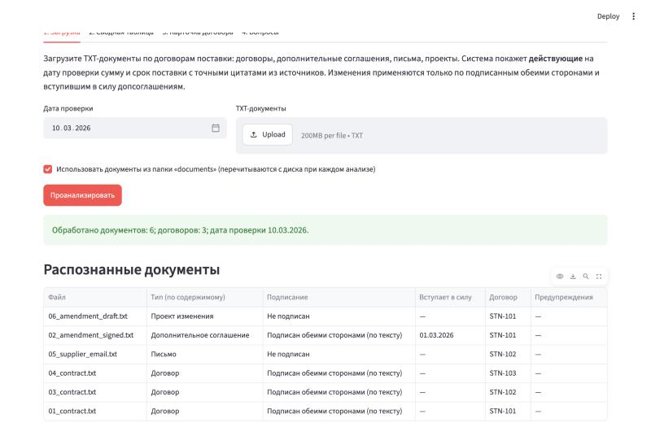
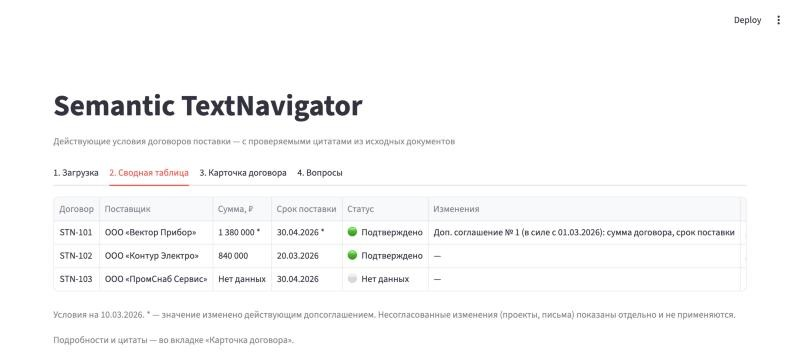
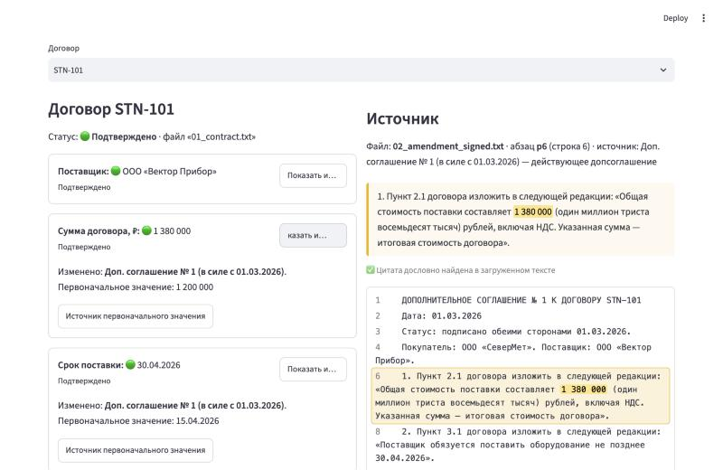
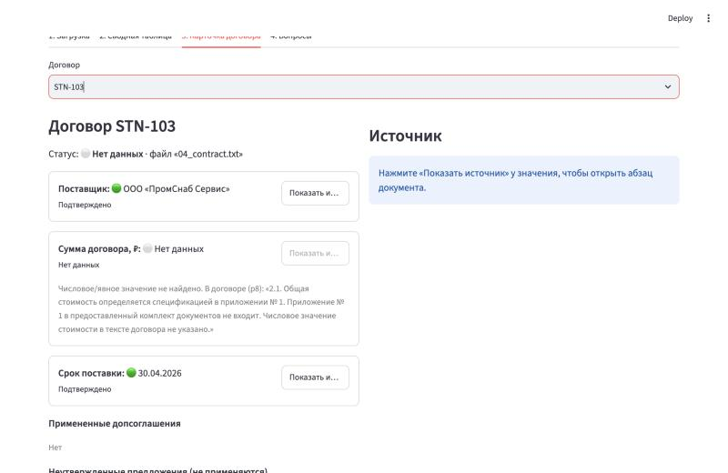
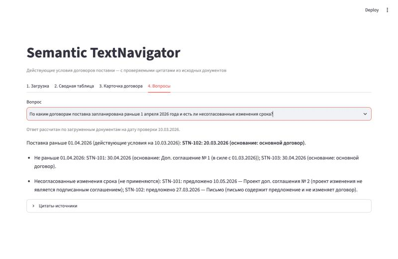

Ответ за минуту — с доказательством
Проблема
Условия договора разнесены по договору, допсоглашениям, письмам и проектам. Легко применить неподписанное изменение или перепутать аванс с суммой.
Решение
Загрузка TXT → тип, подпись и связь с договором определяются по содержимому → действующие на дату условия → переход к абзацу-источнику.
Результат
Работающее приложение, все контрольные ответы на учебном наборе верны, 34 автотеста, публичная ссылка.
Моя роль
Я превратила задачу в проверяемые требования: бизнес-правила юридической интерпретации, модель данных, 14 обязательных тестовых сценариев, требования к цитатам и критерии готовности. Код, тесты и документацию сгенерировал Claude Code. Я принимала результат по критериям, сделала обязательной финальную приемку сценариев в браузере (она выявила 2 дефекта интерфейса) и приняла решения о публикации.
Ручная сверка документов — источник дорогих ошибок
Чтобы узнать действующий срок поставки, закупщик открывает каждый документ и выясняет: подписан ли он, кем, с какой даты действует, какие пункты меняет. Затем сводит итог вручную.
| Боль пользователя | Бизнес-риск |
|---|---|
| Письмо «переносим срок» выглядит как изменение условий | Решение по неподписанному предложению |
| Рядом с суммой стоят аванс, НДС, лимит бюджета | Оплата или претензия на неверную сумму |
| Рядом со сроком поставки — срок оплаты и дата приемки | Претензия по неверной дате |
| Ответ «срок — 30.04» нечем подтвердить | Решение нельзя проверить и защитить |
| Нужно помнить, что чем изменено | Время специалиста уходит на рутину |
Job To Be Done
Customer discovery с реальными закупщиками не проводился: проект выполнен как тестовое задание на 6 учебных документах. Ниже факты и гипотезы разделены.
В учебных документах есть все типовые ловушки: аванс, бюджетный лимит, срок оплаты, дата приемки, письмо, неподписанный проект. Система верно обрабатывает каждую.
Если каждое значение подтверждено цитатой, а спорные случаи честно помечены, закупщик заменит ручную сверку системой, и ошибок с неподписанными изменениями станет меньше.
Как проверить: пилот с 3–5 закупщиками на 50–100 реальных пакетах; замер времени до ответа и расхождений с ручной проверкой; интервью о доверии к ответу с цитатой и без нее.
Что считать успехом
Показатели выше получены на учебном наборе из 6 документов и подтверждены автотестами. На реальных договорах они не измерялись.
Продуктовые KPI предложены, не измерялись
| Метрика | Определение | Как измерять | Ориентир |
|---|---|---|---|
| Точность действующих условий | Доля «Подтверждено», совпадающих с эталонной разметкой | Размеченная выборка ≥ 100 договоров, прогон при каждом изменении правил | ≥ 99% |
| Время до проверенного ответа | Медиана от загрузки пакета до фиксации ответа | События в интерфейсе против замера ручной сверки | в 3+ раза быстрее |
| Доля «Требуется проверка» | Полнота автоматизации | Логи анализа | снижается со временем |
Точность правил важнее ширины функций
Бюджет — 4 часа. Приоритет получили три поля, нужных для решения по поставке, и полное покрытие правил подписи, вступления в силу и конфликтов.
Загрузка TXT (UTF-8, BOM, Windows-1251) · тип и подпись по содержимому · связь по номеру договора · действующие условия на дату · предложения отдельно · цитата с проверкой · 4 вопроса · три статуса значения
Неустойка (путь расширения проверен, в интерфейс не добавлена) · сверка суммы прописью с цифрами · экспорт в Excel
DOCX/PDF · ручное подтверждение спорных значений · косвенные изменения · хранилище и поиск · роли и аудит · интеграции с СЭД/ERP/ЭДО
От пакета документов к решению
Все изображения ниже — реальные скриншоты локальной версии на учебном наборе, дата проверки 10.03.2026.





Every answer must be traceable to its source
Ядро продукта — не интерфейс, а правило, какой документ имеет право изменить условия договора.
Нет значения — «Нет данных»
Аванс, НДС, лимит бюджета и срок оплаты не подходят под шаблоны условий и никогда не подставляются вместо суммы или срока.
Конфликт соглашений
Разные даты вступления в силу — применяется более позднее, с пометкой. Одинаковые даты и разные значения — «Требуется проверка».
Имя файла не источник
Идентификатор документа — хэш содержимого. Переименование и порядок загрузки не меняют результат: это проверяют тесты.
Цитата — часть модели данных
Каждое значение хранит файл, абзац и дословный текст. Код проверяет, что цитата есть в исходнике, а значение — в цитате.
Пример на учебном наборе (дата проверки 10.03.2026)
| Договор | Исходно | Документы | Действует |
|---|---|---|---|
| STN-101 | 1 200 000 ₽ · 15.04.2026 | ДС № 1 подписано, в силе с 01.03; проект ДС № 2 не подписан | 1 380 000 ₽ · 30.04.2026 проект 1 450 000 ₽ / 10.05 не применяется |
| STN-102 | 840 000 ₽ · 20.03.2026 | Письмо: перенос на 27.03, согласия нет | 840 000 ₽ · 20.03.2026 письмо — предложение |
| STN-103 | Сумма в приложении, которого нет · лимит 600 000 ₽ | — | Нет данных · 30.04.2026 |
Простая архитектура, в которой каждый шаг проверяем
Почему без LLM внутри приложения
| Критерий | Правила — выбрано | LLM |
|---|---|---|
| Воспроизводимость | Одинаковый вход — одинаковый ответ | Ответ может меняться |
| Галлюцинации | Невозможны по построению | Нужен отдельный контроль |
| Объяснимость | Совпадение шаблона в конкретном абзаце | Объяснение генерирует модель |
| Гибкость к формулировкам | Низкая | Высокая |
Следующий шаг для реальных договоров — гибрид: LLM предлагает кандидата, правила и проверка цитаты решают, принять ли его.
Разделение ролей: Product Owner и Claude Code
| Этап | Я — Product Owner | Claude Code |
|---|---|---|
| Постановка | Правила, модель данных, 14 тестовых сценариев, экраны, критерии готовности | Анализ документов, риски, архитектура |
| Реализация | Запрет хардкода ответов и логики под конкретные договоры | Код, интерфейс, тесты, документация |
| Проверка | «Не заявлять, что тесты пройдены, без запуска» | Запуск тестов, мутационная проверка |
| Приемка | Список сценариев для финальной проверки: загрузка, таблица, вопросы, переходы к цитатам | Прошел сценарии в браузере, нашел и исправил 2 дефекта, добавил регрессионный тест |
| Публикация | Публичный репозиторий, Streamlit Cloud | Репозиторий, диагностика входа, публикация, проверка облака |
34 теста — и ручная приемка, которая нашла то, что тесты пропустили
Тесты действительно ловят ошибки: при отключенном правиле «неподписанные документы не применяются» упало 5 тестов. Отдельно проверены: правка суммы в исходном TXT меняет ответ, новый договор появляется без изменения кода, переименование файлов и смена порядка загрузки результат не меняют.
Дефект 1 · Цитата чужого договора на экране
Дефект 2 · Источник открывался за пределами экрана
Что подтверждено и что пока гипотеза
Приложение работает локально и публично · верные действующие условия по трем договорам, включая ловушки · цитата с программной проверкой у каждого подтвержденного значения · 34/34 теста · новый договор без изменения кода
Сокращение ручной сверки · исключение ошибок с неподписанными изменениями · прозрачность решений для юристов и руководителей · ускорение работы закупщиков. Подтвердить на пилоте замером «до/после».
Точность и объяснимость — выше гибкости
| Решение | Альтернативы | Чем пожертвовали | Оставшийся риск |
|---|---|---|---|
| Правила вместо LLM | LLM-извлечение; гибрид | Гибкостью к новым формулировкам | Много «Нет данных» на реальных договорах |
| Консервативные статусы | «Самое вероятное» значение | Полнотой автоматизации | Частые ручные проверки на «грязных» документах |
| ДС меняет только изложенные пункты | Брать любые суммы и даты из ДС | Косвенные изменения («+15%») | Такие изменения не распознаются |
| Более позднее ДС побеждает, равные даты — на проверку | Всегда проверка; порядок загрузки | Простотой объяснения | «Отменить ДС № 1» не распознается |
| Streamlit | React + API | Гибкостью верстки | Для продакшена интерфейс придется переписать |
Следующие шаги не реализовано
1. Ручное подтверждение
Комментарий и решение по «Требуется проверка» — закрывает цикл и дает разметку для метрики точности.
2. DOCX и PDF
Документы с текстовым слоем — главный барьер реального использования.
3. Новые поля
Неустойка, условия оплаты, график партий. Путь расширения уже проверен.
4. Гибридное извлечение
LLM предлагает, правила и проверка цитаты валидируют.
5. Интеграции
СЭД, ERP/1С, ЭДО: документы без ручной загрузки, статус подписи из ЭДО.
6. Роли и аудит
Права на документ и на результат, журнал решений.
При 100 000 документов
| Сейчас | При масштабе |
|---|---|
| Синхронный анализ в сессии | Очередь задач и воркеры; идемпотентность по хэшу содержимого (уже служит id документа) |
| Файлы в памяти | Объектное хранилище для оригиналов, PostgreSQL для условий и цитат |
| Нет поиска | Поисковый индекс по абзацам с фильтрами по договору, типу, статусу |
| Пересчет всего пакета | Инкрементальный пересчет связанного договора; переобработка при новой версии правил |
| Нет прав и аудита | ACL на документ и на результат; журнал «кто, что, какой версией правил» |
Выводы Product Lead
- AI ускоряет реализацию, но не заменяет приемку. Первая версия с тестами появилась примерно за 11 минут работы агента, но оба дефекта интерфейса прошли автотесты и нашлись только при ручном проходе сценария.
- Критерии приемки — главный инструмент управления AI-разработкой. 14 сценариев, запрет хардкода и требование показывать фактические результаты тестов сделали работу агента проверяемой.
- Бизнес-правила важнее визуальной сложности. Ценность — в правиле «условия меняет только подписанное и вступившее в силу соглашение»; оно сформулировано до первой строки кода.
- Проверяемость — условие доверия. Без цитаты закупщик перепроверит вручную, и продукт потеряет смысл. Поэтому цитата — часть модели данных.
- Честное «не знаю» — продуктовая функция. «Нет данных» вместо бюджетного лимита защищает пользователя от ошибки.